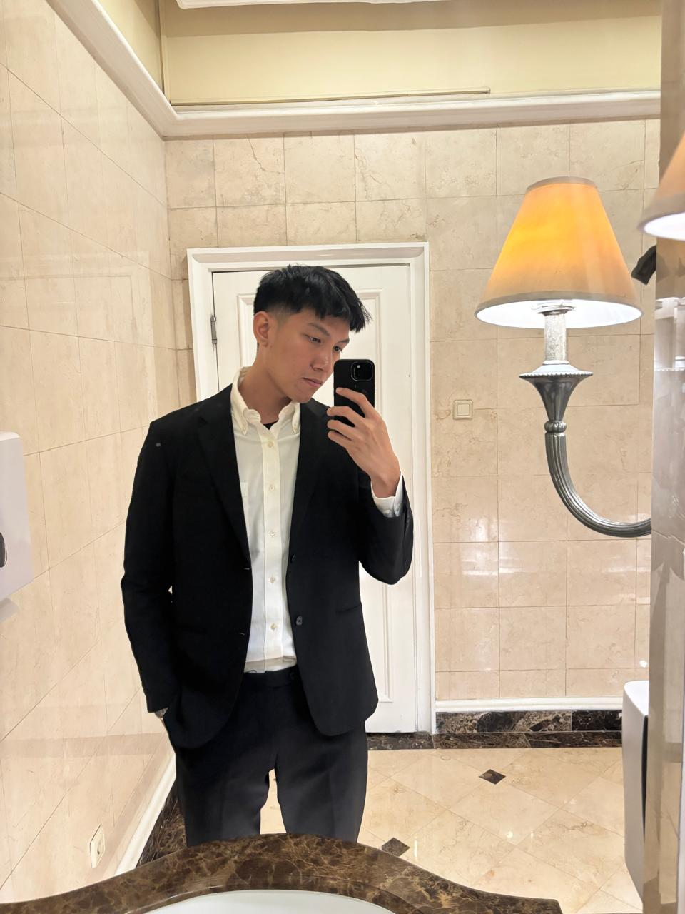

You arrived precisely when I’m still figuring out how to make this website from scratch. I was taught how to code HTML when I was still in high school, but I didn’t realize how much I had forgotten.
So please wait as I put this website together :)
In the interim, if you'd like to know more about me, allow me to make a proper introduction, my name is Fiqar. I work in communications at Edelman Indonesia. At the world's #1 communications consultancy firm, I spend most of my time tinkering around public narratives, corporate affairs, and how organizations communicate during moments that actually matter. The past half decade at the company has been immensely rewarding and formative for both my professional and personal growth.
My background was far from PR, though. I studied History at Universitas Padjadjaran, wrote my thesis on the role of US foreign policy in Indonesia during the Cold War era, and somehow ended up equally interested in policy, international relations, politics, and the one thing that matters most, sports! When I’m not working, I’m usually watching movies, writing something half-finished, or falling into another Dota "find another match" rabbit hole. The last part really does take a toll on me, so I try to balance it out with going to the gym and having fruitful convos with people closest to me.
Do come back soon for my selected work, writings that keep me going, projects I worked on, as well as thoughts & ideas that pop through my head.
